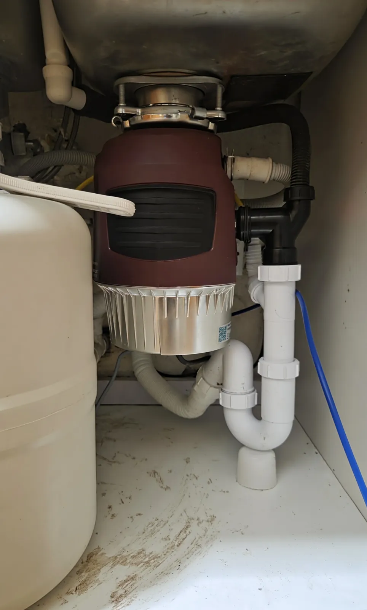
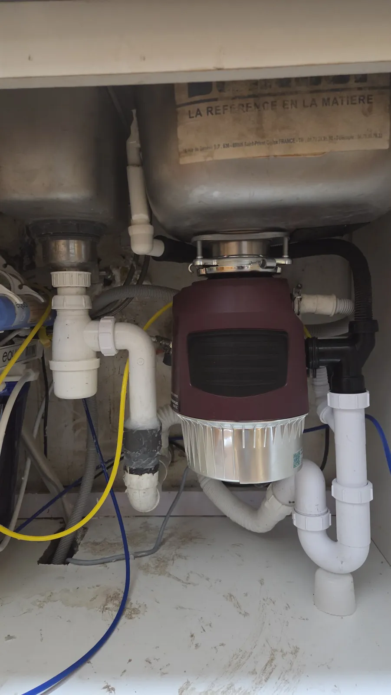

Client Work 3
Kitchen Garbage Disposal Installation
Food waste disposer fitted under a double kitchen sink, with the existing drain plumbing reworked so everything connects and drains cleanly.
Disposer Mounting
Unit mounted securely to the sink flange, sealed and leak-tested.
Drain Rework
Existing under-sink pipework adjusted and re-routed to suit the new unit.
Tested & Tidy
Full water test on every connection before handover.
Client Feedback
"Excellent service! I had a fairly complicated garbage disposal installation that required some adjustments to the existing plumbing under my kitchen sink, and he did a fantastic job getting everything set up properly.
He was knowledgeable, patient, and took the time to understand what was needed and figure out the best way to get everything connected.
What I appreciated most was his attention to detail and willingness to take on a job that wasn't particularly straightforward. He was professional, reliable, and clearly knew what he was doing.
Really happy with his work and would highly recommend him to anyone looking for a skilled and dependable plumber!"


Planning a garbage disposal installation?
Send a short video of the space under your sink on WhatsApp for a fast, accurate quote.